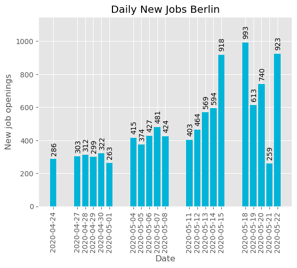
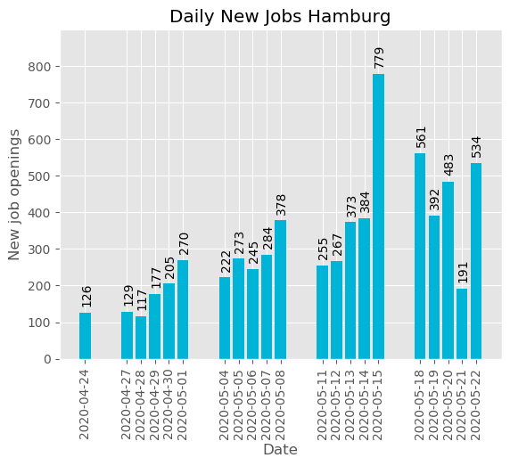

<!DOCTYPE html>
<html lang="en">
<head>    
    <meta http-equiv="content-type" content="text/html; charset=UTF-8" />
    
        <script>
            L_NO_TOUCH = false;
            L_DISABLE_3D = false;
        </script>
    
    <script src="https://cdn.jsdelivr.net/npm/leaflet@1.6.0/dist/leaflet.js"></script>
    <script src="https://code.jquery.com/jquery-1.12.4.min.js"></script>
    <script src="https://maxcdn.bootstrapcdn.com/bootstrap/3.2.0/js/bootstrap.min.js"></script>
    <script src="https://cdnjs.cloudflare.com/ajax/libs/Leaflet.awesome-markers/2.0.2/leaflet.awesome-markers.js"></script>
    <link rel="stylesheet" href="https://cdn.jsdelivr.net/npm/leaflet@1.6.0/dist/leaflet.css"/>
    <link rel="stylesheet" href="https://maxcdn.bootstrapcdn.com/bootstrap/3.2.0/css/bootstrap.min.css"/>
    <link rel="stylesheet" href="https://maxcdn.bootstrapcdn.com/bootstrap/3.2.0/css/bootstrap-theme.min.css"/>
    <link rel="stylesheet" href="https://maxcdn.bootstrapcdn.com/font-awesome/4.6.3/css/font-awesome.min.css"/>
    <link rel="stylesheet" href="https://cdnjs.cloudflare.com/ajax/libs/Leaflet.awesome-markers/2.0.2/leaflet.awesome-markers.css"/>
    <link rel="stylesheet" href="https://rawcdn.githack.com/python-visualization/folium/master/folium/templates/leaflet.awesome.rotate.css"/>
    <style>html, body {width: 100%;height: 100%;margin: 0;padding: 0;}</style>
    <style>#map {position:absolute;top:0;bottom:0;right:0;left:0;}</style>
    
            <meta name="viewport" content="width=device-width,
                initial-scale=1.0, maximum-scale=1.0, user-scalable=no" />
            <style>
                #map_id {
                    position: relative;
                    width: 90.0%;
                    height: 90.0%;
                    left: 0.0%;
                    top: 0.0%;
                }
            </style>
        
</head>
<body>    
    
            <div class="folium-map" id="map_id" ></div>
        
</body>
</html>
<script>    
    
            var map_id = L.map(
                "map_id",
                {
                    center: [51.5167, 9.9167],
                    crs: L.CRS.EPSG3857,
                    zoom: 6,
                    zoomControl: false,
                    preferCanvas: false,
                    scrollWheelZoom: false,
                }
            );
    
            var tile_layer_id = L.tileLayer(
                "https://{s}.tile.openstreetmap.org/{z}/{x}/{y}.png",
                {"attribution": "Data by \u0026copy; \u003ca href=\"http://openstreetmap.org\"\u003eOpenStreetMap\u003c/a\u003e, under \u003ca href=\"http://www.openstreetmap.org/copyright\"\u003eODbL\u003c/a\u003e.", "detectRetina": false, "maxNativeZoom": 6, "maxZoom": 6, "minZoom": 6, "noWrap": false, "opacity": 1, "subdomains": "abc", "tms": false}
            ).addTo(map_id);
        
    
            var circle_marker_berlin = L.circleMarker(
                [52.52, 13.405],
                {"bubblingMouseEvents": true, "color": "#3186cc", "dashArray": null, "dashOffset": null, "fill": true, "fillColor": "#3186cc", "fillOpacity": 0.2, "fillRule": "evenodd", "lineCap": "round", "lineJoin": "round", "opacity": 1.0, "radius": 19.775238095238095, "stroke": true, "weight": 3}
            ).addTo(map_id);
        
    
            var popup_berlin = L.popup({"maxWidth": "100%"});
        
            var berlinContent = '';
            popup_berlin.setContent(berlinContent);

            circle_marker_berlin.bindPopup(popup_berlin);
    
            var circle_marker_2 = L.circleMarker(
                [48.1351, 11.582],
                {"bubblingMouseEvents": true, "color": "#3186cc", "dashArray": null, "dashOffset": null, "fill": true, "fillColor": "#3186cc", "fillOpacity": 0.2, "fillRule": "evenodd", "lineCap": "round", "lineJoin": "round", "opacity": 1.0, "radius": 13.447619047619048, "stroke": true, "weight": 3}
            ).addTo(map_id);
        
    
        var popup_münchen = L.popup({"maxWidth": "100%"});

        
            var münchenContent = ''; 
            popup_münchen.setContent(münchenContent);
        

        circle_marker_2.bindPopup(popup_münchen)
        ;
            var circle_marker_95588a2abff04682b727a3b58dd1b7e4 = L.circleMarker(
                [50.1109, 8.6821],
                {"bubblingMouseEvents": true, "color": "#3186cc", "dashArray": null, "dashOffset": null, "fill": true, "fillColor": "#3186cc", "fillOpacity": 0.2, "fillRule": "evenodd", "lineCap": "round", "lineJoin": "round", "opacity": 1.0, "radius": 6.12952380952381, "stroke": true, "weight": 3}
            ).addTo(map_id);
        
    
        var popup_frankfurt = L.popup({"maxWidth": "100%"});

        
            var frankfurtContent = ''; 
            popup_frankfurt.setContent(frankfurtContent);
        

        circle_marker_95588a2abff04682b727a3b58dd1b7e4.bindPopup(popup_frankfurt)
        ;

    
            var circle_marker_4 = L.circleMarker(
                [50.9375, 6.9603],
                {"bubblingMouseEvents": true, "color": "#3186cc", "dashArray": null, "dashOffset": null, "fill": true, "fillColor": "#3186cc", "fillOpacity": 0.2, "fillRule": "evenodd", "lineCap": "round", "lineJoin": "round", "opacity": 1.0, "radius": 6.302857142857143, "stroke": true, "weight": 3}
            ).addTo(map_id);
        
    
        var popup_köln = L.popup({"maxWidth": "100%"});

        
            var kölnContent = '';
            popup_köln.setContent(kölnContent);
        

        circle_marker_4.bindPopup(popup_köln)
        ;

        
    
    
            var circle_marker_5 = L.circleMarker(
                [53.5511, 9.9937],
                {"bubblingMouseEvents": true, "color": "#3186cc", "dashArray": null, "dashOffset": null, "fill": true, "fillColor": "#3186cc", "fillOpacity": 0.2, "fillRule": "evenodd", "lineCap": "round", "lineJoin": "round", "opacity": 1.0, "radius": 12.657142857142858, "stroke": true, "weight": 3}
            ).addTo(map_id);
        
    
        var popup_hamburg = L.popup({"maxWidth": "100%"});

        
            var hamburgContent = '';
            popup_hamburg.setContent(hamburgContent);
        

        circle_marker_5.bindPopup(popup_hamburg)
        ;

        
    
</script>
